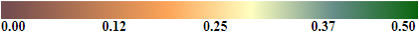
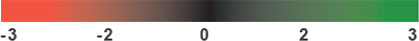

Company Name:
Location: 300 East Ash Street
City, State, Zip: Salina, KS, 67401
County: SALINE
Primary Contact: Steve Storniolo
Phone: 785-825-1541
Email: steve.storniolo@adm.com
Indigo uses satellite imagery to track the seasonal progression of crops in key production areas around the world. However, no place matters more to your business than the production area around your facility. Indigo will provide you with a monthly GeoIntelligence report to bring you our insights from space about how production is progressing for your facility.
Indigo understands that the more you know about your production area the better you will be able to get the grain you require at the best price.
SALINE County, KS
IN: Crop Health Index

Standar Deviations From Norm

Canopy Crop Health
Growing Degree Days
January 1 - April 22
Cumulative Precip
January 1 - April 22
LAST
SEASON
0.163
754.4
250.4
THIS
SEASON
0.201
474.1
157.9
Crop health anomalies (shown on the map as green or red) indicate positive or negative changes in canopy crop health from the 10-year average.
Indigo's proprietary Crop Health index (CHI) uses daily satellite imagery to assess the greenness or chlorophyll content and density of a crop's canopy. Intensity of canopy greenness correlates strongly with overall crop biomass and yield.
Other measurements like NDVI can be useful, but they only measure generic vegetation. Indigo's CHI is built specifically to measure agricultural crop health.
What's Next
Indigo will produce a monthly GeoIntelligence report bringing insights we see from space to our value customers. Over the course of the 2019 season we plan to cover key stage of corn, soy and wheat including topics such as emergence, estimated acres planted, flooding, yield forecasts and other supply-related topics relevant to the location of your facility.